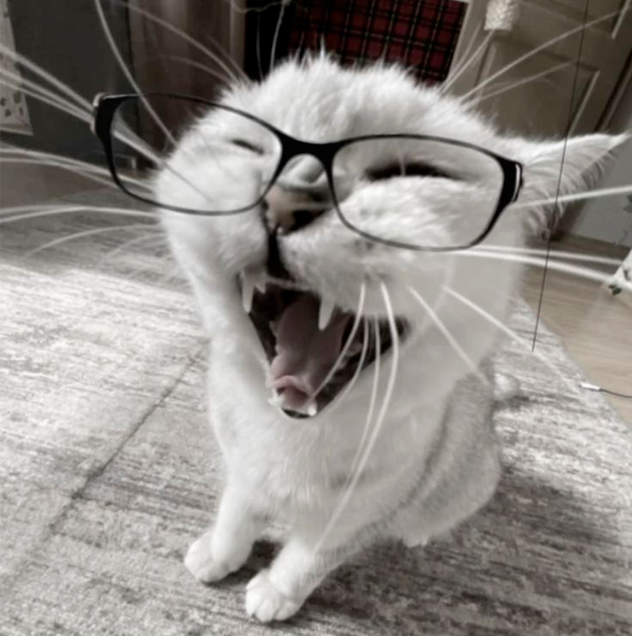

Фритрек и нулевой спринт: Подготовка к работе
</html>

Это было самое начало пути. На этом этапе важно было проникнуться основами и настроиться на учёбу. И, возможно, подумать, как новые знания могут повлиять на ваше будущее.
Второй курс универа стал для меня переломным моментом - я понял, что хочу заниматься вебом и фронтендом в частности. До курсов Практикума я около года шел по пути самоучки, успел более менее освоить верстку, потому фритрек сложностей вообще не вызвал. Важный вывод, к которому я пришел тогда - мне безумно нравится этим заниматься и я хочу найти в этой сфере работу, что служит для меня сильной мотивацией до сих пор.